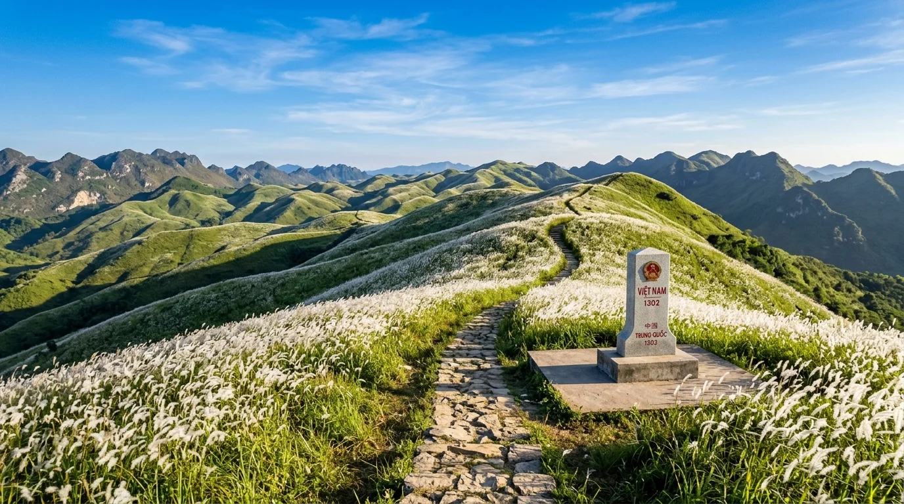
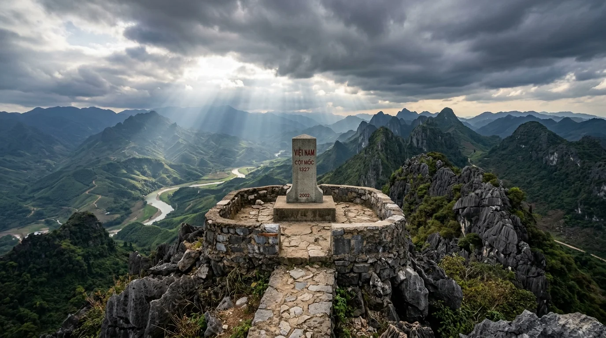
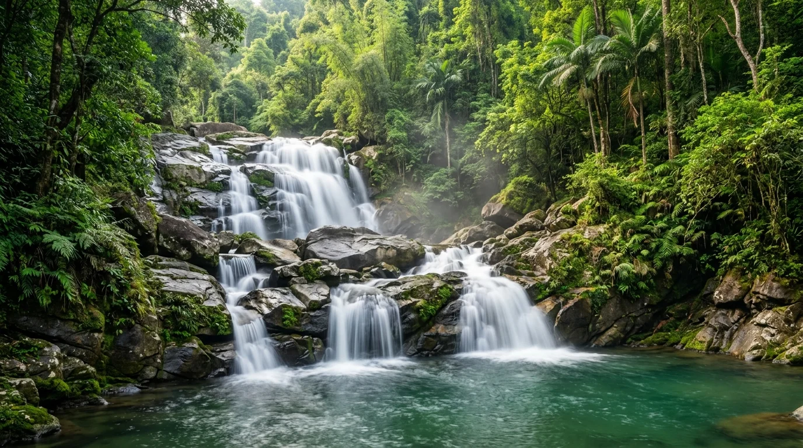
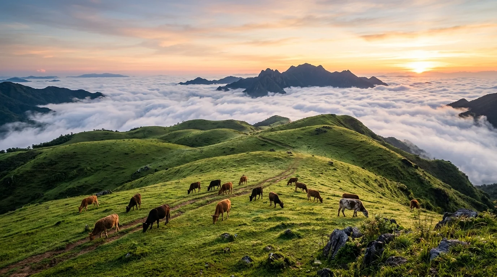
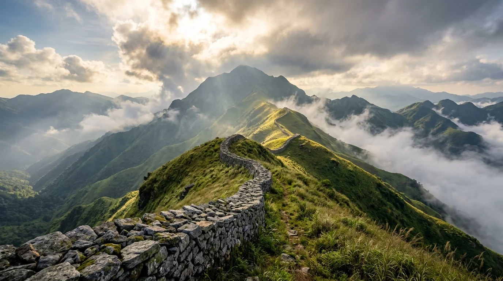
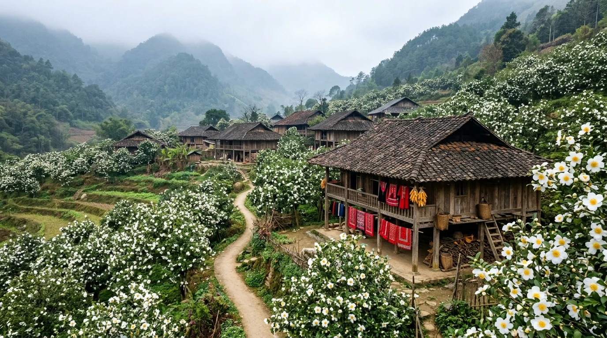

🌿 1. Bình Liêu — 'Sapa Thu Nhỏ' Của Vùng Đất Mỏ
Với độ cao trung bình trên 600m và đỉnh cao nhất lên tới 1.429m (đỉnh Cao Xiêm — "Nóc nhà tỉnh Quảng Ninh"), Bình Liêu sở hữu nền khí hậu ôn đới vùng cao mát mẻ quanh năm, bốn mùa cảnh sắc thay đổi kỳ ảo: mùa xuân rực rỡ hoa trẩu, hoa đào; mùa hè róc rách suối mát thác Khe Vằn; mùa thu vàng ruộm ruộng bậc thang lúa chín; và đặc biệt nhất là mùa đông với thiên đường cỏ lau trắng bạt ngàn cùng mùa hoa sở trắng tinh khôi.
Vùng đất này là nơi chung sống gắn bó lâu đời của 5 dân tộc anh em: Tày (chiếm hơn 50%), Dao Thanh Phán, Sán Chỉ, Kinh và Hoa. Đến Bình Liêu, du khách không chỉ được thử thách đôi chân trên những bậc thang sống lưng khủng long cheo leo giữa mây trời, mà còn được đắm mình vào thanh âm réo rắt của điệu hát Soóng Cọ người Sán Chỉ, ngắm nhìn sắc chàm thêu tay rực rỡ của thiếu nữ Dao và thưởng thức bát miến dong đậm đà hương núi rừng.
📸 2. 8 Tọa độ Thắng cảnh Biểu tượng & Cột Mốc Biên Cương
(Nhấp vào từng hình ảnh để xem chi tiết ảnh chất lượng cao và câu chuyện truyền tích lịch sử chính thống)
Sống Lưng Khủng Long & Cột Mốc 1305
Con đường bậc thang hơn 2.000 bậc uốn lượn trên đỉnh sống núi giữa bạt ngàn biển cỏ lau trắng muốt dập dờn trong gió biên cương.
Cột Mốc Biên Giới 1300
Cột mốc sừng sững trên đỉnh đồi lộng gió ngập tràn thảm hoa cỏ lau trắng tinh khôi soi bóng ráng chiều hoàng hôn rực rỡ.

Cột Mốc Biên Giới 1302
Bậc thang đá uốn lượn giữa những vạt hoa lau trắng xóa bồng bềnh, điểm check-in trong trẻo tuyệt mỹ của giới trẻ.

Cột Mốc Biên Giới 1327 (Đỉnh Thanh Long)
Cột mốc thiêng liêng trên đỉnh núi Thanh Long sừng sững trông coi dải biên ải Đông Bắc, nơi giao hòa giữa mây ngàn và rừng thông reo.

Thác Khe Vằn (3 Tầng Nước)
Quần thể 3 tầng thác đổ trắng xóa qua những thềm đá hoa cương khổng lồ giữa đại ngàn nguyên sinh hùng vĩ.

Đỉnh Cao Ly (Thiên Đường Săn Mây)
Thảo nguyên cỏ xanh bạt ngàn trên độ cao 1.000m, nơi đón bình minh biển mây trắng bồng bềnh và ngắm bầu trời sao đêm kỳ ảo.

Đỉnh Cao Xiêm (Tường Thành Đá Cổ)
Bức tường thành đá bí ẩn xếp tay dài hàng cây số trên đỉnh núi 1.429m quanh năm mây mù che phủ kiêu hùng.

Bản Sông Moóc & Mùa Hoa Sở
Bản người Dao Thanh Phán mộc mạc bên ruộng bậc thang ngập tràn sắc trắng tinh khôi của rừng hoa sở nở rộ tháng 12.
🚗 3. Hướng Dẫn Di Chuyển & Cung Đường Từ Hà Nội (~270km)
1. Lộ trình từ Hà Nội về Bình Liêu (~270km, 3,5 – 4 tiếng)
- Bằng ô tô cá nhân / Xe limousine chạy cao tốc: Tuyến đường siêu tốc và êm ái nhất hiện nay: Xuất phát từ Hà Nội → Cao tốc Hà Nội - Hải Phòng (CT04) → Cầu Bạch Đằng → Cao tốc Hạ Long - Vân Đồn - Tiên Yên (CT06) → Đến nút giao Tiên Yên rẽ phải vào Quốc lộ 18C chạy thêm khoảng 30km đường trải nhựa đẹp là tới thẳng thị trấn Bình Liêu. Toàn tuyến hơn 230km là cao tốc tiêu chuẩn.
- Bằng xe khách giường nằm: Đón xe từ Bến xe Mỹ Đình, Giáp Bát hoặc Gia Lâm chạy thẳng Bình Liêu (các nhà xe Hoàng Phú, Ka Long, Kiên Đức...) khởi hành hàng ngày, giá vé khoảng 200.000 – 280.000 VNĐ/vé.
- Bằng xe máy cho dân phượt: Tuyến đường theo Quốc lộ 18 qua Bắc Ninh, Chí Linh, Uông Bí, Hạ Long, Cẩm Phả, Tiên Yên rồi rẽ Quốc lộ 18C lên Bình Liêu. Cung đường tuần tra biên giới tại Bình Liêu trải nhựa đẹp nhưng có nhiều đoạn đèo dốc quanh co đòi hỏi tay lái vững vàng.
2. Phương tiện dạo quanh các cột mốc Bình Liêu
- Thuê xe máy tại thị trấn (150.000 – 200.000 VNĐ/ngày): Đây là phương tiện tối ưu nhất để chinh phục cung đường tuần tra biên giới uốn lượn nối các cột mốc 1300, 1302, 1305 và 1327.
- Thuê xe bán tải / Taxi trọn gói: Dành cho nhóm bạn hoặc gia đình, xe ô tô có thể đi đến tận chân dốc các mốc 1300, 1302 và chân dốc Sống lưng khủng long 1305.
💡 Gợi ý lịch trình 2 ngày 1 đêm săn cỏ lau & sống lưng khủng long hoàn hảo:
• Ngày 1: Hà Nội (6h00) → Cao tốc về Bình Liêu (10h00) → Ăn trưa miến dong gà đồi → Chiều check-in Thác Khe Vằn mát lạnh → Lên đồi mốc 1300 và 1302 ngắm biển cỏ lau đón hoàng hôn rực rỡ → Tối ngủ homestay thị trấn hoặc cắm trại đỉnh Cao Ly.
• Ngày 2: Sáng sớm chinh phục Sống lưng khủng long & Cột mốc 1305 (khoảng 2 – 3 tiếng đi và về) ngắm bạt ngàn cỏ lau trắng trong nắng sớm → Trưa ghé bản Sông Moóc ngắm hoa sở và mua đặc sản miến dong → Chiều thong thả theo cao tốc về lại Hà Nội (19h00).
🎫 4. Bảng Giá Vé & Dịch Vụ Tham Quan Bình Liêu
Mức giá vé niêm yết chính thức tại các danh thắng và chi phí trải nghiệm bản địa (cập nhật mới nhất):
| Điểm tham quan / Dịch vụ | Chi phí tham khảo | Ghi chú & Trải nghiệm |
|---|---|---|
| Sống lưng khủng long & Cột mốc 1305 | Miễn phí vào cổng | Thắng cảnh tự nhiên (Gửi xe máy tại chân dốc: 10.000 – 20.000 VNĐ; thuê xe ôm lên dốc nếu không muốn đi bộ đoạn đầu: ~50k) |
| Cột mốc biên giới 1300, 1302, 1327 | Miễn phí vào cổng | Tự do tham quan chụp ảnh đồi cỏ lau biên giới (chú ý giữ gìn vệ sinh và an ninh biên phòng) |
| Danh lam thắng cảnh Thác Khe Vằn | 10.000 – 20.000 VNĐ | Vé vào cửa tham quan sinh thái: 10.000 VNĐ/người (xe điện trung chuyển: 20.000 VNĐ/người nếu có nhu cầu; gửi xe: 5.000 VNĐ) |
| Đỉnh Cao Ly (Săn mây & Cắm trại) | Miễn phí vào cổng | Khu vực đồi cỏ tự nhiên tự do cắm trại (lưu ý dọn sạch rác và cẩn trọng lửa trại) |
| Đỉnh Cao Xiêm (Tường thành đá 1.429m) | Miễn phí vào cổng | Tự do trekking khám phá (nên có người bản địa dẫn đường nếu đi nhóm đông) |
| Bản Sông Moóc & Vườn hoa Sở | Miễn phí vào cổng | Tự do dạo bản người Dao, ngắm hoa sở nở rộ vào dịp tháng 12 hàng năm |
🍲 5. Lưu Trú & Tinh Hoa Ẩm Thực Vùng Cao Bình Liêu
1. Gợi ý điểm lưu trú tại Bình Liêu
- Homestay nhà sàn bản địa: Sông Moóc House, A Dào Homestay, Bình Liêu Horizon... Không gian yên tĩnh giữa núi rừng, chủ nhà người Dao, Tày thân thiện, giá từ 250.000 – 500.000 VNĐ/phòng.
- Khách sạn tại trung tâm thị trấn: Khách sạn Bình Sơn, Khách sạn Anh Dũng... tiện nghi đầy đủ, thuận tiện ăn uống buổi tối tại chợ phiên thị trấn.
- Cắm trại lều trại trên đỉnh Cao Ly: Trải nghiệm ngủ lều đón gió lạnh vùng cao, ngắm biển mây sớm mai và ngắm dải ngân hà tuyệt đẹp.
2. Tinh hoa ẩm thực vùng cao Bình Liêu
🗓️ 6. Lịch Mùa Vàng & Mẹo Du Lịch Bản Địa
1. Lịch các mùa đẹp nhất trong năm tại Bình Liêu
- Tháng 10 – Tháng 11 (Mùa Cỏ Lau Nở Trắng Rực Rỡ Nhất): Mùa du lịch đỉnh cao nhất năm. Cả dải biên cương biến thành biển hoa cỏ lau trắng muốt bồng bềnh trong gió lạnh, tiết trời thu đông se lạnh nắng vàng tuyệt mỹ.
- Tháng 12 (Hội Hoa Sở & Mùa Săn Mây Cao Ly): Hoa sở trắng tinh nhụy vàng bung nở ngút ngàn các cánh rừng; nhiệt độ vùng cao xuống thấp là thời điểm săn biển mây cuồn cuộn trên đỉnh Cao Ly.
- Tháng 3 – Tháng 4 (Mùa Hoa Trẩu & Lễ Hội Soóng Cọ): Rừng hoa trẩu trắng muốt rơi đầy đường tuần tra, mùa hội hát giao duyên Soóng Cọ của người Sán Chỉ.
- Tháng 7 – Tháng 9 (Mùa Ruộng Bậc Thang Lúa Chín): Những triền ruộng bậc thang Sông Moóc, Khe O, Cao Thắng vàng óng ả uốn lượn dưới chân núi.
⚠️ Lưu ý quan trọng khi chinh phục biên cương Bình Liêu:
• Quy định khu vực biên giới: Các cột mốc 1300, 1302, 1305, 1327 nằm trên đường biên giới quốc gia, du khách luôn mang theo giấy tờ tùy thân (CCCD / Hộ chiếu) để xuất trình khi lực lượng Bộ đội Biên phòng kiểm tra; tuyệt đối không vượt qua đường biên giới hay có hành vi xâm phạm mốc quốc giới.
• Chuẩn bị trang phục leo sống lưng khủng long: Cung đường mốc 1305 dốc và dài hơn 2.000 bậc, cần chuẩn bị giày thể thao bám dính tốt, gậy leo núi, mũ che nắng và nước uống đầy đủ.
• Giữ gìn vệ sinh đồi cỏ lau: Không bẻ cành hoa sở, không vứt rác bừa bãi trên đường tuần tra biên giới và các bãi cắm trại đỉnh Cao Ly.